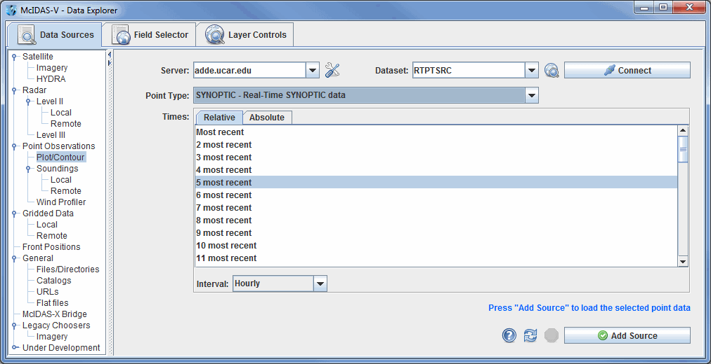

Choosing Point Data
The Point Observations->Plot/Contour chooser allows for choosing surface, upper air, and other types of point data (e.g.: aircraft data) to plot or contour for the current date. For more information on how to use this chooser, see Getting Started - Displaying Surface and Upper Air Point Data.

Image 1: Point Data Chooser
Properties
- Server - Selects the server to be used. Enter in a server name or choose one from the pulldown menu.
 Manage - Manages the list of servers by opening the ADDE Servers tab of the User Preferences window.
Manage - Manages the list of servers by opening the ADDE Servers tab of the User Preferences window.- Dataset - Represents the dataset being used. Enter in a dataset name or choose one from the pulldown menu.
 Public Datasets - Lists the public datasets available on the server. This button looks for any datasets contained in the PUBLIC.SRV file on the server. If this file doesn't exist, or if there are no datasets in this file that can be used by this chooser, then no datasets will be returned.
Public Datasets - Lists the public datasets available on the server. This button looks for any datasets contained in the PUBLIC.SRV file on the server. If this file doesn't exist, or if there are no datasets in this file that can be used by this chooser, then no datasets will be returned. - Connects to and queries the server for available times.
- Connects to and queries the server for available times.- Point Type - Selects the Point Type to display.
- Times: Relative - Allows for adding any number of relative (most recent) times.
- Relative Time Interval - Sets a time increment to use with relative times. For example, using "3 most recent" times with a "3" hour time increment would result in the most recent time, one from 3 hours ago and one from 6 hours ago. This does not impact absolute times.
- Times: Absolute - Allows for selecting one or more absolute times. When choosing absolute times for the first time McIDAS-V needs to query the ADDE server for the times. This may take some time. To select more than one time use Ctrl+click or Shift+click. See the Timeline Controls section for details on its use. Click on the
 Select Day button to narrow down a large dataset to one day.
Select Day button to narrow down a large dataset to one day.
- Match Time Driver - Selects times that match the time driver, assuming one has been set. For more information on this feature, see Time Matching. This option is only available if a time driver has been set in the session.
 Help - Brings up this help page.
Help - Brings up this help page. Refresh - Updates the Level III radar chooser with the most recent data.
Refresh - Updates the Level III radar chooser with the most recent data. Cancel - Cancels the query of data and stations. The chooser will reset back to default.
Cancel - Cancels the query of data and stations. The chooser will reset back to default. - Loads the selected radar data.
- Loads the selected radar data.